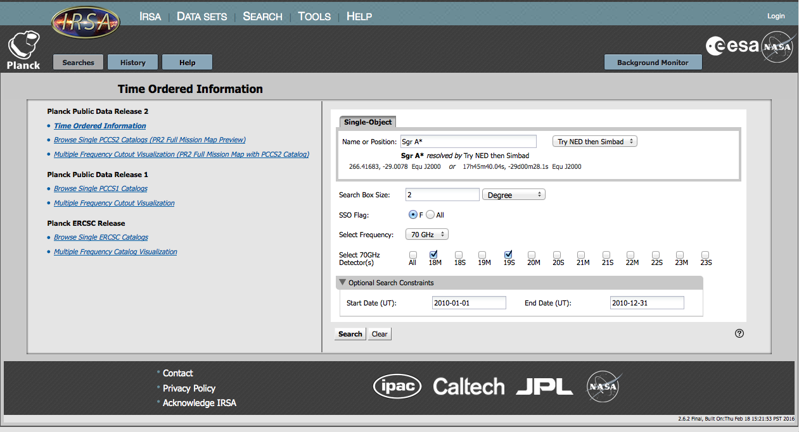
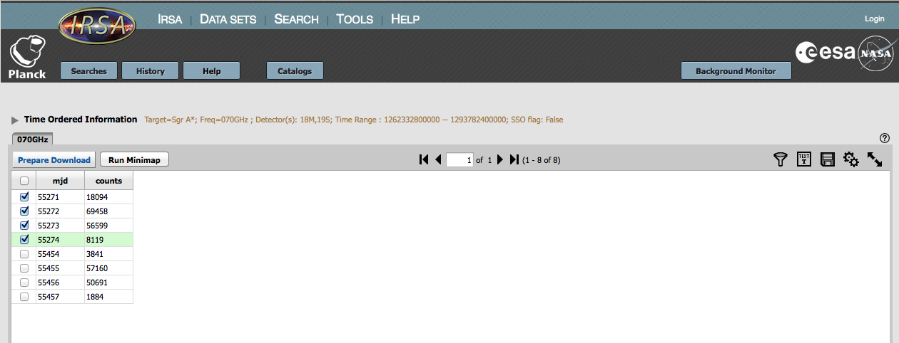
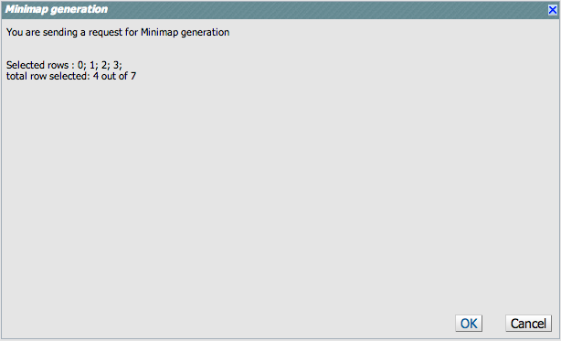
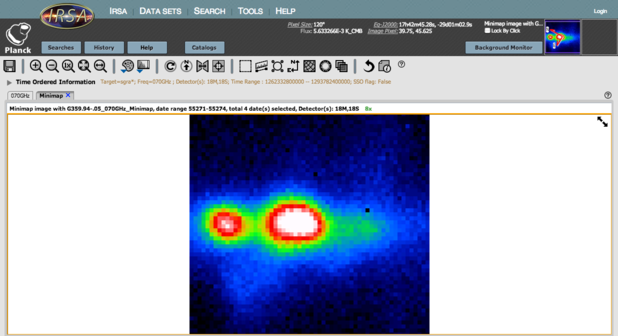

Contents of page/chapter:
+Overview -- What are TOIs
+Searching -- The basics of searching
+Results -- Downloading and display of results
Overview of Planck Time Ordered Information
Time Ordered Information [TOI] consists of the
measurements of the sky intensity obtained by the Planck
spacecraft as it spun at 1 revolution per minute. Each measurement
is tagged by the location on the sky that was pointed to, the
time of the observation, and whether or not a solar system object
was within the beam.
Searching Planck Time Ordered Information
Planck TOIs can be selected for download as FITS binary tables and
for display. The TOI Search page allows you to chose the
TOIs you want by location, frequency, specific detectors, and (optionally)
by a range of dates. In the February 2015 Public Data Release 2 the complete set of TOIs
are available for all three of the LFI bands
(30, 44, and 70 GHz).
HFI TOIs will be made available though this search tool in a subsequent release.
These TOI have been pre-extracted from the entire-mission PLA files. For ease of use the data have already had offsets and per-detector monopoles applied, and all flagged data removed (except SSO if selected). Weights, calculated from the RIMO, are supplied in the header for correct combination of multiple detectors.
Here we will walk you through an example TOI search including the downloading of the FITS binary table versions and the generation of an image using the Minimap tool. Minimap creates a 2D projection of the full map at the specified location, for more details please see below. For illustration we select a 2 degree square field centered on the Galactic Center which is bright and exhibits some structure at these frequencies. Clicking on the TOI Search option brings up a query form for a Single Object in which we can enter the position or as an object name to be resolved via NED or Simbad. We enter the name of "sgra*" which is resolved by NED and note that the desired 2 degree square field is the default option.
The SSO Flag selection has two choices: 'F', which means we do not want TOI samples in which a bright Solar System object (the planets Mars, Jupiter, Saturn, Uranus, Neptune) was within the detector beam, and 'All', in which we do allow these. The Planck band is specified via the Select Frequency. The band selection then populates the list of available detectors at that frequency. We choose '70 GHz' and the 18M and 19S detectors for this example.
In the Optional Search Constraints we set the start and end dates to '2010-01-1' and '2010-12-31', thus choosing only observations in calendar year 2010.

Accessing your search results
Your TOI search returns a list of the MJDs (modified Julian Dates)
during which your source was observed by Planck
along with the number of TOI samples obtained on each day.
The text following TOI Search, e.g. "Target=sgra*;..",
lists all of the criteria that you chose for your search.
Each MJD's data can be individually selected for download or map generation by clicking on the box to the left of each entry. You can also select all available data by choosing the box that appears on the column header row. In the example below, we've selected the first four continguous MJDs which are from the same pass. The remaining three dates are from the subsequent pass roughly six months later.

Clicking on the Prepare Download tab brings up the Download Options dialog box. Within this you can specify whether or not you want to download the search results in FITS binary table format and if you wish the associated Minimap image to be generated and included in the download. The TOIs and images you have requested are accessed and managed by the standard Background Monitor.
The combination of choosing 'No' for Download TOI Data and not selecting Download TOI Minimap results in a "No data available for download' Information pop-up window being displayed when you click on Prepare Download. The download is packaged as a zip file and you can select whether the Zip File Structure is 'Flattened (no folders)' or 'Structured (with folders)'. You can also choose to be notified of the requested data being available via e-mail, which will inform you that Your packaging request has completed. Zip files are available to download for 72 hours. and will include the URL for immediate download.
The FITS file returned from your search and download contains nine columns of data with one row per time-stamped observation. Here are the names and descriptions of each column.
The other tab available on the Search Results page produces an image from the selected TOIs using the Minimap algorithm. Minimap creates a naive sky map from the TOI samples. The pixel value is the unweighted average of the values of all the selected TOI samples for which the detector pointing direction lies within the pixel. It is assumed that offsets due to 1/f noise have already been removed from the TOIs. The map projection is gnomonic, centered on the search direction, and the pixel size is 2 arcmin. Unsampled pixels are marked by a NaN value. This brings up a simple confirmation dialog box listing the rows (starting at 0) that you selected in the MJD list. The only options here are 'OK" to proceed with the image generation or 'Cancel'.

The resulting Minimap image is displayed in the new tab labeled 'Minimap' which uses the standard IRSA image visualization environment Your original search results are remain accessible via a tab that is tagged by the Planck band, in our example '70 GHz'. During the download dialog you have the option of rerunning Minimap again with a different selection of dates. If you do this then this new map is the one that you will download, i.e. not the tabbed version.
